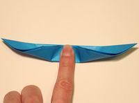
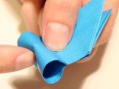

Step 1: Start with a square sheet of origami paper, color side down.

Step 2: Simply fold the bottom half to the top half, making sure the edges meet, then unfold.
Step 3: Fold the top and bottom edges to meet at the center.
Step 4: Fold in all four corners so their edges meet at the center horizontal crease.

Step 5: Fold down the top half.

Step 6: Fold the center of the bottom half to the top half. Crease about one inch (2.5 cm) of the center only with your fingernail. Do not crease all the way. Remove your finger and there should be a crease in the center only.
Step 7: Turn the paper over.

Step 8: Place a finger on top of the center of the paper and with your other hand, wrap the paper snugly around your finger.

Step 9: Remove your finger and you should have a loop like this.
Step 10: Use a fingernail and poke in the center of the bottom of the loop.
Step 11: With your forefinger and thumb, grab both ends of the loop holes and pinch them together. Pinch and release to make the butterfly flap!

Step 12: Draw and design the butterfly wings. Now you have a beautiful butterfly.